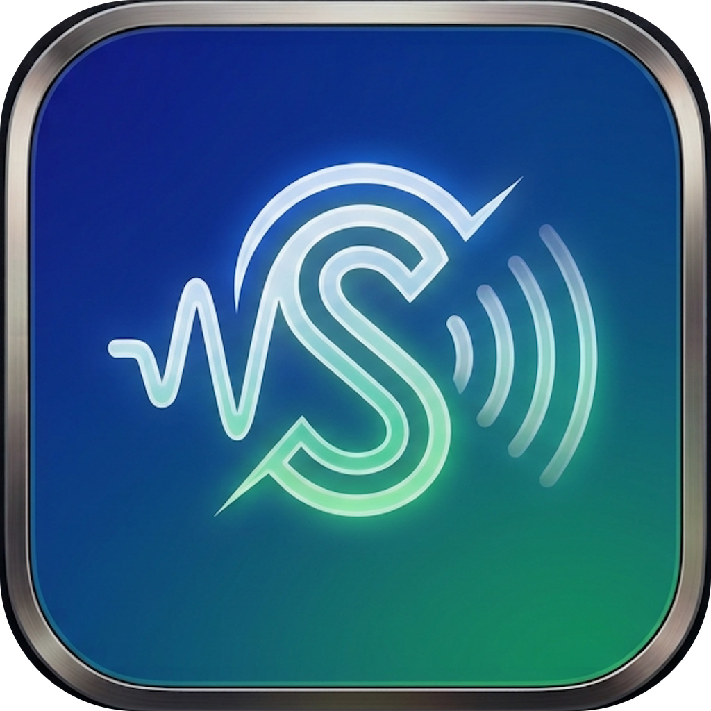
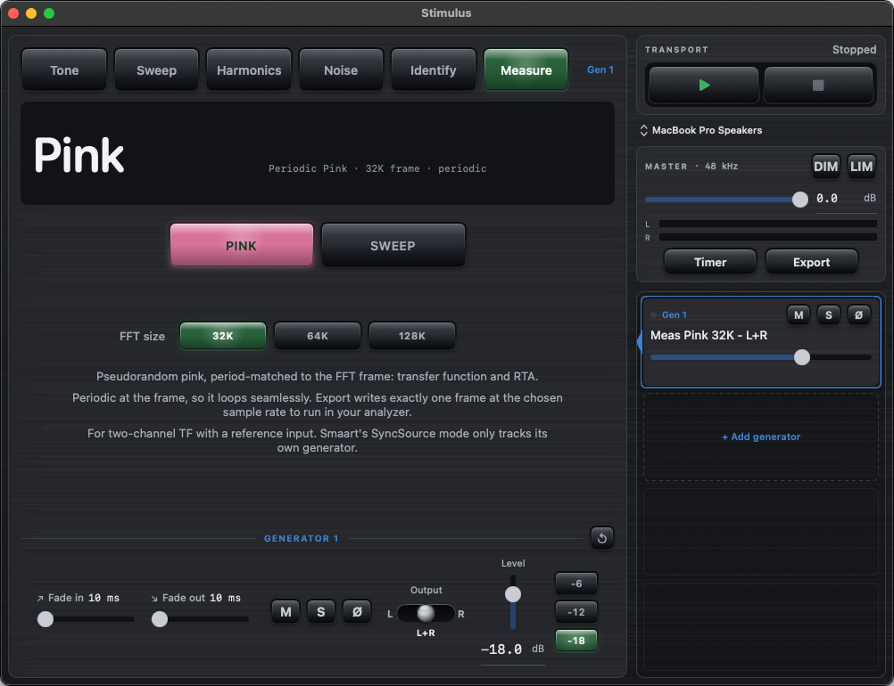
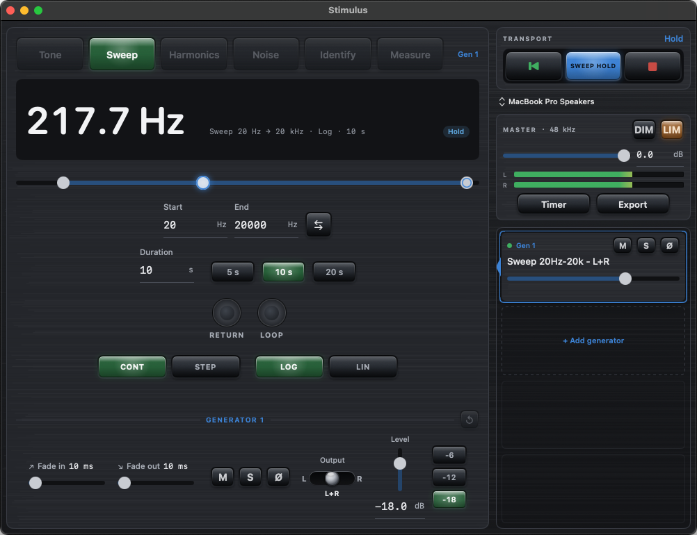
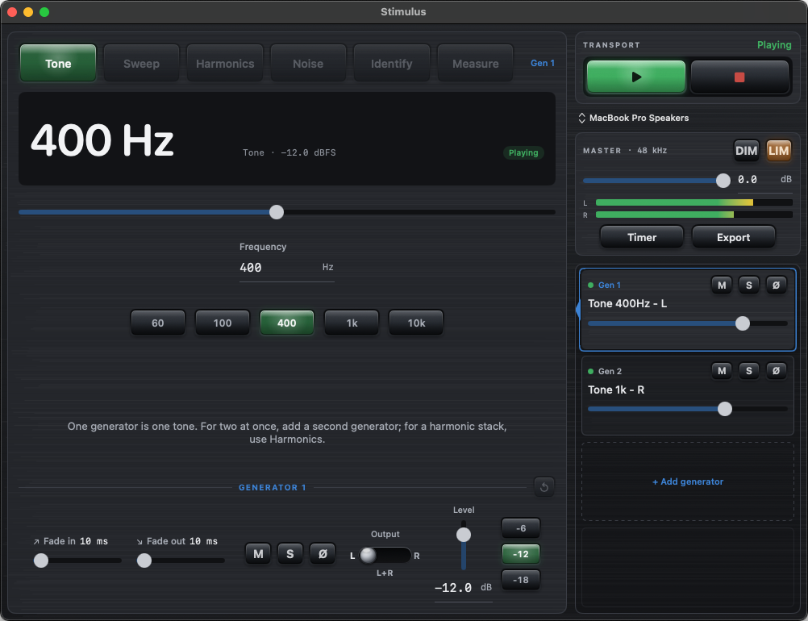
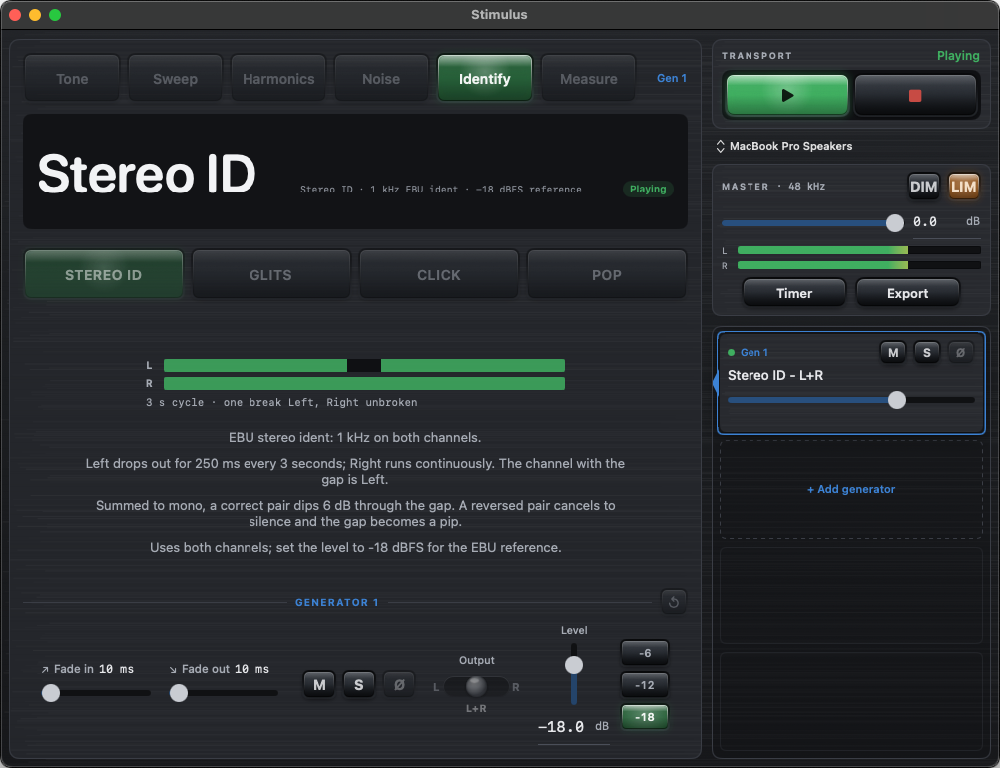
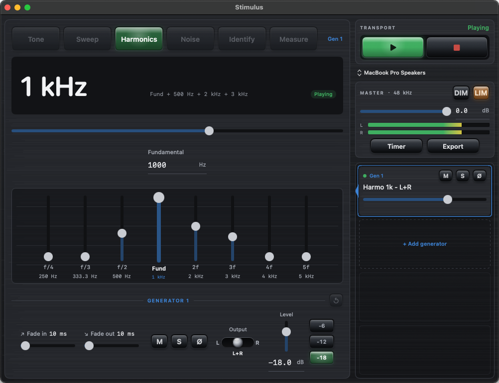
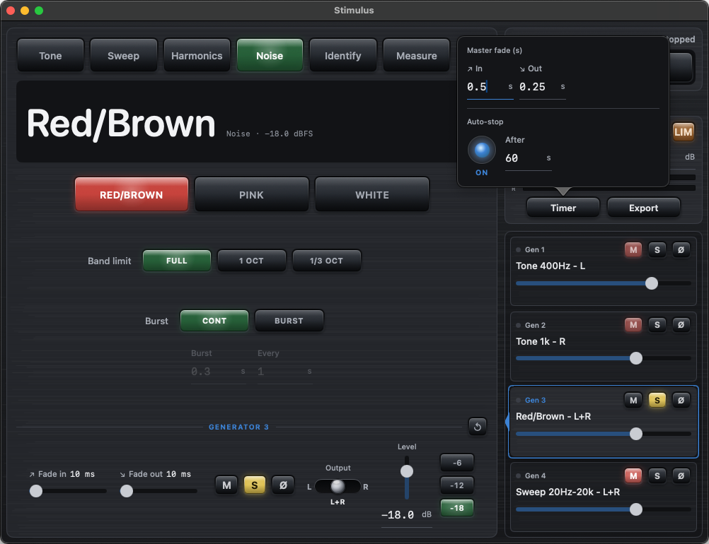
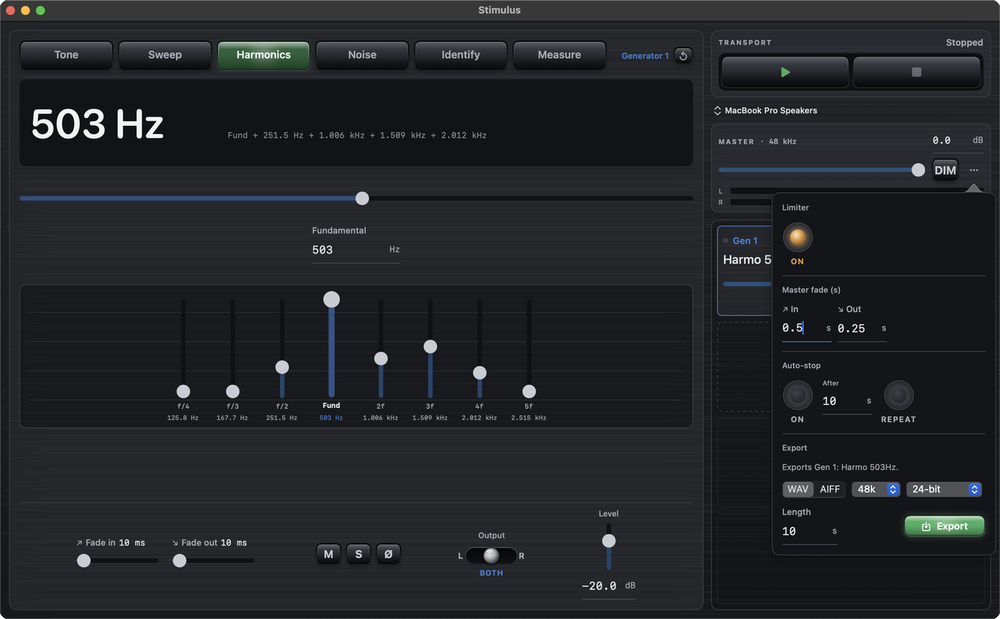

Stimulus
{{ site.data.content.apps.stimulus.subtitle }}
{{ site.data.content.apps.stimulus.tagline }}
{{ site.data.content.apps.stimulus.description }}
Measure
Signals your analyzer expects
Periodic pink matched to your FFT frame and a cycle-synchronised log sweep. Both loop seamlessly; export writes exactly one frame.

Sweep
Hold it and hear it
Log or linear, any range, continuous or stepped. Hold freezes the sweep at its current frequency so you can scrub the tone by ear.

The rack
Four generators, running together
Each with its own level, routing, mute and solo - the controls you know from your console - so you can stack or A/B signals without reaching for another app.

Identify
Prove the patch before the show
Stereo ID and GLITS with their break patterns drawn on screen, a Click for aligning delays by ear, and positive-going polarity Pops.

Harmonics
Exercise a system properly
A fundamental with seven partials from f/4 to 5f on faders, for controlled harmonic content.

Noise
Three colours, banded or bursts
Pink, red/brown or white; full range or band-limited to 1 octave or 1/3 octave; continuous or in timed bursts.

Master and export
Safe by default
Master limiter, dim, fades and auto-stop. Render any generator or the whole mix to WAV or AIFF at 44.1, 48 or 96 kHz.

Features
-
{% for feature in site.data.content.apps.stimulus.features %}
- {{ feature }} {% endfor %}
Output
Plays through any output device, and exports WAV or AIFF test files at 44.1, 48 or 96 kHz - 16-bit, 24-bit or 32-bit float.
Sweeps, noise, GLITS and harmonics, on Mac and iPad.